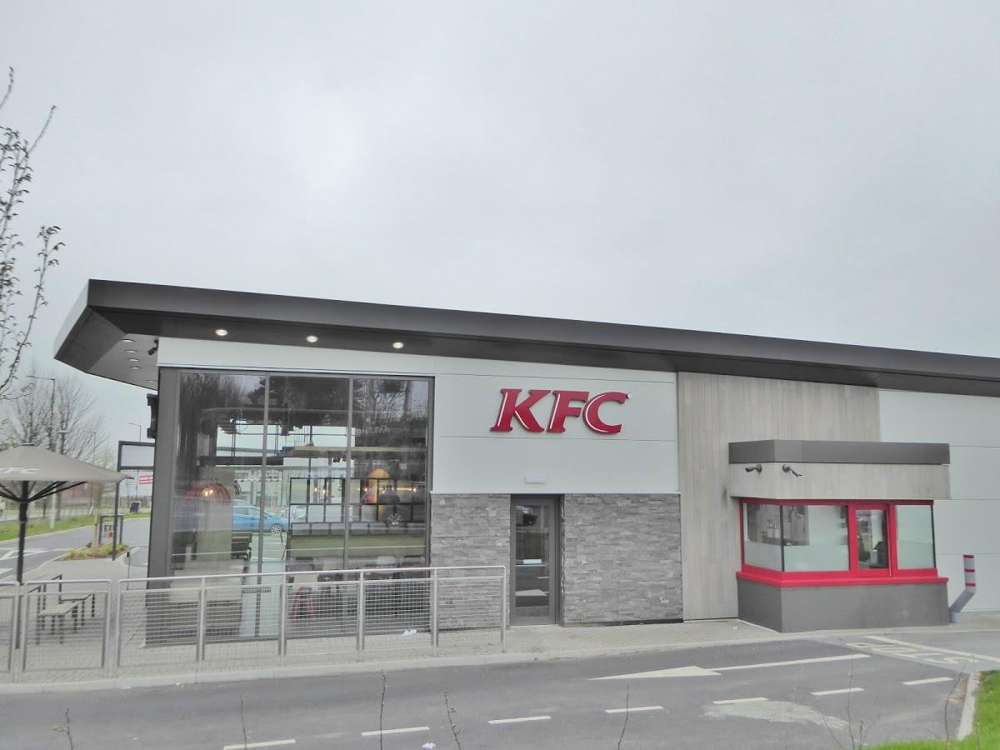

Employment
I G T
Software Engineer/Game Delivery Engineer - Sept 2022 -> ONGOING
Duties: Write and test code, as and where needed as well as deploying maintainable and saleable code. Working in an agile sprint environment. Use of continuous integration and automated testing tools. Analysing user/client requirements and creating software to these requirements. Creating technical documentation. Maintaining software by monitoring. Simultaneously working on multiple games and issues.
Training new colleagues.
Segritude (Part-time)
Lead Programmer - June 2023 -> ONGOING Duties: I recently join a team of Game Developers in a startup company in video game creating. Due to my large interest in gaming, this role is quite enjoyable to me and allows me to learn more. I am currently Lead Programmer handling a team of 5 other developers. I am in charge of creating, reviewing, documenting the work and keeping management informed of processes.
KFC
 Cook, Burger Station, Team Member - Sept 2019 -> Aug 2022 Duties: Skills attained in the fast-food industry include; teamwork and management, multi-tasking and handling the fast-paced environments during rush periods, while keeping under control of all the pressure that came with it. I was able to expand on my customer interactions giving me the ability to handle stressful types of customers and allowing the customer to leave happily with the intention to always return.
The Bonny Inn
 Kitchen Porter, Waiter, Chef - Aug 2016 -> Oct 2018
Duties: I worked part-time in my local bar/restaurant whilst studying for my A-levels and full-time during the holidays. Initially I started this role in the kitchen as a porter, but quickly became trusted with more responsible duties such as food preparation because of my work ethic and willingness to learn all I could off the more experienced members of the team. I was encouraged to complete further in-house training doing waiting-on and some of the more difficult chef duties as time went by.
Kitchen Porter, Waiter, Chef - Aug 2016 -> Oct 2018
Duties: I worked part-time in my local bar/restaurant whilst studying for my A-levels and full-time during the holidays. Initially I started this role in the kitchen as a porter, but quickly became trusted with more responsible duties such as food preparation because of my work ethic and willingness to learn all I could off the more experienced members of the team. I was encouraged to complete further in-house training doing waiting-on and some of the more difficult chef duties as time went by.
Salmesbury Hall
Gardening/Ground Maintenance - Jun 2015 -> July 2015 Duties: Delivering high quality maintenance/cleaning/gardening duties. Responsible for time management and ensuring jobs completed in time and to the required standard. I often excelled at this, as it was my first ever job and I was keen to impress. Due to this, I was often trusted to work unsupervised and trained using power tools not normally given to trainees.